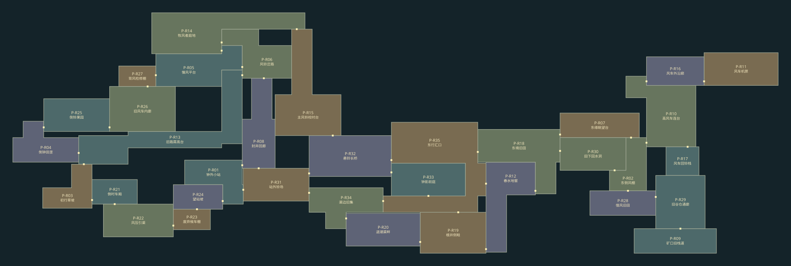

平原 · 连续整区试玩
进入游戏 · 版本 f9e92d4a30ab
35个房间按真实边界相接，45处内部门缝闭合。西侧主环、东侧田野与货运回环、地下根井—地窖—灌渠均已接入实际操作路线。
逐房直达：钟外小站 · 封井回廊 · 东境旧田 · 钟影前庭 · 东行汇口
试玩顶栏可更换房间、来向和起始能力，使用临时进度；大地图显示完整地区，不改写正式存档。完整美术、剧情和探索节奏仍在逐房打磨。
整区空间
查看最新整区审核提案：路线、收集、Boss与每房职责（待审，尚未应用到下方运行地图）

点击可放大整区图。房形及门位来自当前施工数据。
短片
录像使用明确的逐房起点、真实控制器和正常速度，每段点击后才加载。完整新档通关另由实际输入回归检查。
旧田石崖：折返反冲与落点
2.8 秒 · 0.60 MB
下载这一段地下汇口：回环进入钟庭
4.2 秒 · 0.69 MB
下载这一段配重井：射铃启程与联动锯轮
8.0 秒 · 2.11 MB
下载这一段版本和覆盖范围见 片段清单。